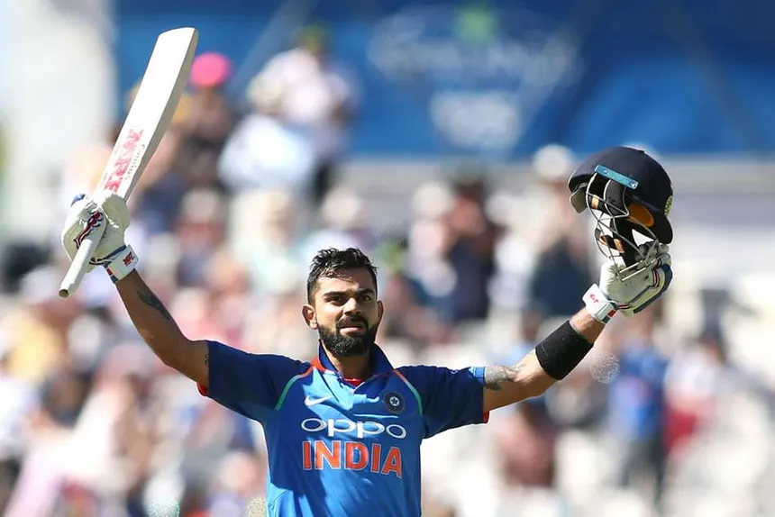

Virat Kohli
Career

Virat Kohli, born on November 5, 1988, in Delhi, India, is one of the most accomplished and celebrated cricketers of his generation. His career is marked by extraordinary batting prowess, exceptional leadership, and an insatiable drive for excellence.
Kohli's journey in international cricket began in 2008 when he made his debut for the Indian cricket team. His early years showcased glimpses of his talent, but it was in the following decade that Kohli truly asserted himself as a batting maestro. Known for his aggressive style, impeccable technique, and the ability to chase down challenging targets, Kohli has broken numerous records and set new benchmarks in the cricketing world.
In 2013, he assumed the captaincy of the Indian cricket team in limited-overs formats and later, in 2014, took over the Test captaincy. Under his leadership, India achieved historic victories, including the first-ever Test series win in Australia during the 2018-19 season. Kohli's captaincy has been characterized by his passion, tactical acumen, and a commitment to fostering a winning culture within the team.
Kohli's batting exploits include numerous centuries in all formats, making him one of the most consistent run-scorers in international cricket. His adaptability across formats, be it Test cricket, One Day Internationals (ODIs), or Twenty20s, showcases his versatility and skill across diverse conditions.
Off the field, Kohli is known for his fitness regimen and commitment to a healthy lifestyle. His aggressive demeanor on the field contrasts with his composed and articulate off-field persona. Kohli is also actively involved in philanthropy and charity work, contributing to various social causes.
While Kohli stepped down as the T20I captain in September 2021, his impact on Indian cricket remains indelible. As of my last knowledge update in January 2022, he continues to be a pivotal player in the team and a cricketing icon globally. His journey is a testament to his unwavering dedication, talent, and leadership in the realm of international cricket.
Journey
.jpeg)
Kohli's tryst with cricket began at a young age, and he quickly emerged as a prodigy. His journey into the limelight reached a milestone in 2008 when he made his international debut for the Indian cricket team. Kohli's aggressive style and a hunger for success were evident from the start, earning him a reputation as one of the most promising young batsmen. Over the years, Kohli's consistent performances solidified his place as India's batting mainstay. The turning point came in 2011 during the ICC Cricket World Cup, where he played a pivotal role in India's triumph. His ability to chase down challenging targets and sheer consistency across all formats earned him accolades worldwide. In 2014, Kohli took over the captaincy of the Indian Test team, showcasing leadership qualities that would redefine Indian cricket. Kohli's journey is not only about personal achievements but also about leading the Indian team to new heights, fostering a winning culture, and instilling a sense of pride among fans. His dedication to fitness and relentless pursuit of excellence have made him a role model for aspiring cricketers globally.
Achievements
.jpeg)
Virat Kohli's illustrious career is adorned with numerous remarkable moments that have etched his name in cricketing history. One of the defining moments occurred during the 2011 ICC Cricket World Cup, where Kohli played crucial innings, including a match-winning knock in the semi-final against Pakistan. This tournament victory marked a turning point for Indian cricket, with Kohli's contributions standing out. In 2012, Kohli achieved a historic feat by becoming the fastest player to reach 10 centuries in ODIs, showcasing his unparalleled consistency. His adaptability and mastery across formats were evident in the 2016 T20 World Cup, where he led India to the semi-finals with stellar performances. The year 2018 saw Kohli's stellar overseas performances, particularly in South Africa and England, where he proved his mettle in challenging conditions. His aggressive captaincy and strategic acumen were on full display during India's historic Test series victory in Australia during the 2018-19 season. Off the field, Kohli's marriage to Bollywood actress Anushka Sharma in 2017 became a moment of celebration for fans. These remarkable moments not only define Kohli's cricketing legacy but also portray him as a symbol of resilience, consistency, and leadership.
Remarkable Milestones
